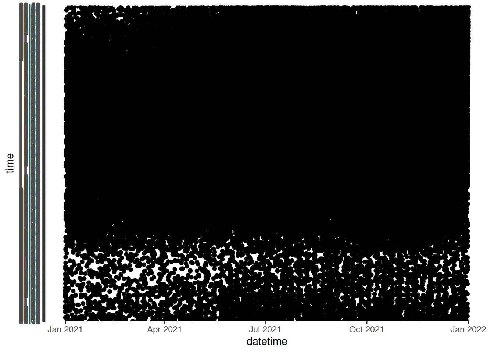
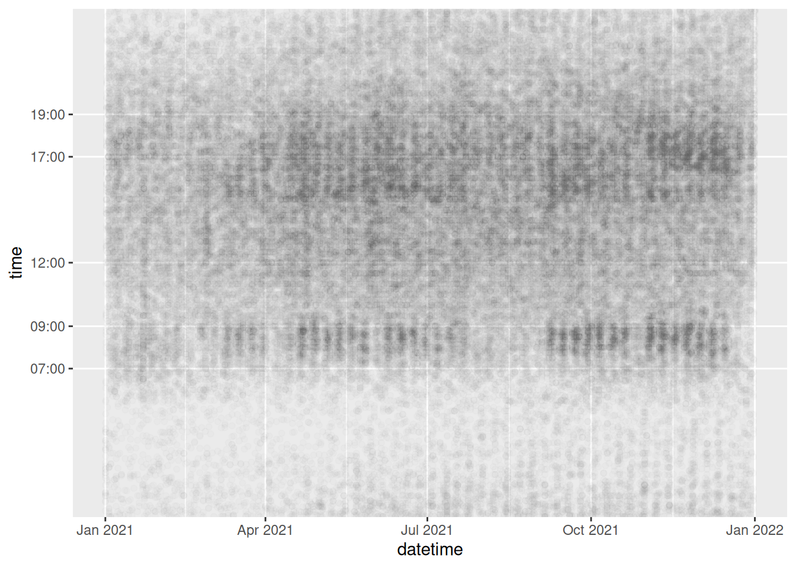

Time is ubiquitous in road safety data, since collisions and road safety implementations always happen at some point in time. This section will show how you can analyse the temporal dimensions of the real world crashes_2021 object we created in Section 4, and then demonstrate how to handle time series data in base R, as well as with hms and lubridate packages. The aim is to get you up-to-speed with how data analysis with time data ‘feels’ before learning the details in subsequent sections. If you are the kind of person who likes to know the details first, feel free to skip this section and return to it later.
library(tidyverse)
── Attaching core tidyverse packages ──────────────────────── tidyverse 2.0.0 ──
✔ dplyr 1.1.4 ✔ readr 2.1.5
✔ forcats 1.0.0 ✔ stringr 1.5.1
✔ ggplot2 3.5.2 ✔ tibble 3.3.0
✔ lubridate 1.9.4 ✔ tidyr 1.3.1
✔ purrr 1.1.0
── Conflicts ────────────────────────────────────────── tidyverse_conflicts() ──
✖ dplyr::filter() masks stats::filter()
✖ dplyr::lag() masks stats::lag()
ℹ Use the conflicted package (<http://conflicted.r-lib.org/>) to force all conflicts to become errors
crashes =tibble(casualty_type =c("pedestrian", "cyclist", "cat"),casualty_age =seq(from =20, to =60, by =20),vehicle_type =c("car", "bus", "tank"),dark =c(TRUE, FALSE, TRUE))
7.1 Temporal analysis of crash data
To get a feel for temporal data analysis in R, let’s start by reading-in crash data for 2021 with the stats19 package by typing the following into the Source Editor and running the code, line-by-line, as taught in Section 3:
library(stats19)crashes_2021 =get_stats19(2021)
Note that, unlike the longer crashes_2021 = get_stats19(year = 2021, type = "accidents") used in Section 4, we did not use named arguments in this code chunk. Instead of year = 2021, we simply typed 2021. That is possible because R functions can be specified by name matching or order: the first argument of get_stats() is year, so the function is expecting a year value. Also, although we didn’t explicitly specify the accidents table, type = "accidents" is the default value, so type only needs to be specified when importing casualty and vehicle datasets.
With that educational aside out of the way, we will now take a look at the time variables that are actually in our newly read-in dataset:
Building on the previous section and a bit of guesswork, it should be clear what just happened: we selected variables that match (with the matches() function) the character strings "time" or (as indicated by the | vertical pipe symbol) "date" and returned the matching variable names. This shows that the stats19 package gives you not one, not two, but three temporal variables.
Exercises:
Print the first 6 and then the first 10 elements of each of the three temporal variables in crashes_2021.
What is the class of each variable (technically, of each vector)?
Bonus: Extract the weekday from the variable called date.
Bonus: How many crashes happened on Monday?
Of the three time variables, it should be clear from the outcome of previous exercises that datetime contains the most useful information. To consolidate the plotting know-how learned in Section 4, we shall start by simply plotting the datetime object (Figure 6.1). Plotting data is a good way of understanding new datasets and the variables they contain. Create the following three plots to show how date and time vary as a function of datetime:
Figure 7.1: Three plots of the datetime (x axis) in relation to the date and time axis.

Figure 7.2: Three plots of the datetime (x axis) in relation to the date and time axis.

Figure 7.3: Three plots of the datetime (x axis) in relation to the date and time axis.
The three figures above tell us many things about the contents of the three temporal variables. It evenprovides insight into the temporal distribution of road casualties in Great Britain. The first two plots (Figure 6.1 and 6.2) show: 1) that the date variable is identical to the datetime variable (at least on the daily resolution than can be seen on the graph); and 2) that time values repeat regularly for the range of dates in datetime (from the start of Jan 2021 to end of Dec 2021). Figure 6.3 makes use of ggplot2‘s functionality to show only certain labels on the Y axis and reduced opacity, so that overlapping points are not completely black. This by far is the most useful of the three plots, showing that most crashes happen between around 7am and 7pm, with a ’long tail’ of crashes in the evening, and that for most of the year there is a clear weekly cycle, reflecting the uptick in crashes during the rush hour commute on weekdays, a pattern that is greatly diminished during several weeks in summer (perhaps corresponding with summer holidays). The 52 weeks of the year can be distinguished even in this small and simple plot, highlighting the ability of visualisation to help understand data. Next, let’s look at how the time-of-day that crashes occur varies as a function of season, severity and day of week.
From the datetime object of class POSIXct, any type of time information can be extracted. This includes the minute, hour, day of week and month of the crash (or other) event that the object records.
Building on the time series plot we created in Section 4, let’s create a graph showing how the hourly distribution of crash numbers changes during the course of a working week. We will do this first by preprocessing the data, creating a new object called crashes_dow, containing hour and day columns, then filtering out weekend, and plotting the results, as shown in the code chunk below and Figure 6.4:
Figure 7.4: Facetted time series showing how the number of crashes increases during the working week.
The result in Figure 6.4 is useful, but if we’re interested in the number of crashes per hour on different days of the week relative to the average, we need to undertake more preprocessing steps. We will count the number of crashes per hour for all 5 working days and then divide by 5 to get the average number of crashes per hour during weekdays. Then we will count the number of crashes per hour/week combination. Finally we will divide the latter by the former. These steps are shown in the code chunk below, which results in Figure 6.5.
crashes_day_rel = crashes_dow %>%# create 'day of week relative' object filter(!is.na(hour) &!day %in%c("Saturday", "Sunday")) %>%# none on weekendsselect(day, hour) %>%# keep only time columnsgroup_by(hour) %>%# group by hourmutate(n_per_hour =n()/5) %>%# number per hour (divide by 5 for n. days)group_by(day, hour) %>%# group by day and hoursummarise(n_hday =n(), n_h =first(n_per_hour)) %>%# summarise resultsmutate(hday_relative = n_hday / n_h) # calculate relative n. crashes per hour/daysummary(crashes_day_rel)
day hour n_hday n_h
Sunday : 0 Min. : 0.00 Min. : 54.0 Min. : 63.6
Monday :24 1st Qu.: 5.75 1st Qu.: 195.5 1st Qu.: 252.2
Tuesday :24 Median :11.50 Median : 662.5 Median : 657.3
Wednesday:24 Mean :11.50 Mean : 630.2 Mean : 630.2
Thursday :24 3rd Qu.:17.25 3rd Qu.: 952.8 3rd Qu.: 899.1
Friday :24 Max. :23.00 Max. :1510.0 Max. :1397.2
Saturday : 0
hday_relative
Min. :0.7087
1st Qu.:0.9309
Median :0.9869
Mean :1.0000
3rd Qu.:1.0440
Max. :1.6220
Figure 7.5: Facetted time series showing relative number of crashes per hour by day in the working week.
The results clearly show that Friday is a dangerous day as many of the columns are above 1 (NB as this is a relative calculation, columns that are less than 1 indicate that there are less crashes per hour on that day than average whereas those above 1 indicate that there are more crashes per hour on that day than average). The extent to which the high relative number of crashes in the most anomalous hours (Friday evening) is due increased exposure vs increased risk per km travelled cannot be ascertained by this plot but it certainly suggests that Friday afternoon and evening is a worthy focus of road safety research.
Exercises:
Building on the code above, show the absolute and relative number of crashes per hour on Saturday and Sunday.
Filter the dataset so it contains only data from two police forces of your choice (e.g. West Yorkshire and Metropolitan Police).
Try creating plots similar to those shown above but facetted by police force rather than by day of the week.
7.2 Handling dates and date-times
It is worth remembering that base R already has decent support for dates and datetimes, although the base R functions are not particularly intuitive. This is shown in the code chunk below, which creates objects representing the date and time of a fictitious crash event on a cold winter’s morning, 1st January 2021, and a subsequent road safety intervention on the 20th October 2021:
crash_datetime_character ="2021-01-01 08:35"# creates date/time as a charactercrash_datetime =as.POSIXct(crash_datetime_character) # converts date/time to a object of the POSIXct typeclass(crash_datetime)
[1] "POSIXct" "POSIXt"
intervention_date_character ="2021-10-20"intervention_date =as.Date(intervention_date_character) # converts date/time to a object of the Date typeclass(intervention_date)
[1] "Date"
# see ?as.POSIXct for more examples
‘POSIXct’, ‘POSIXt’ and ‘Date’ are data types for dates and time that enable easy manipulation of such data. Fortunately for most users, there are easier ways to work with time series data, starting with the hms package.
7.3 Hours, minutes seconds with hms
The hms library in the tidyverse can be used to process hours, minutes and seconds, as shown below. See a very basic demo of the package and links to the package’s help pages with the following commands in which we use the package without loading it with the library() function, demonstrating the package::function() syntax taught in Section 4:
As the package’s name suggests, it is used for dealing with hours, minutes and seconds. It can round time objects of class hms to the nearest second (or any multiple of a second):
hms::round_hms(crash_time_hms, 1) # time to the nearest second
08:35:00
hms::round_hms(crash_time_hms, 1*60*60) # time to the nearest hour
09:00:00
hms::round_hms(crash_time_hms, 1*30*60) # time to the nearest half hour
08:30:00
It can also convert simple text strings into time objects, e.g. as follows (Note: we do not need to include the :00):
hms::parse_hm("08:35")
08:35:00
7.4 The lubridate package
In many cases the most useful and easy to use package when working with temporal data is lubridate. Having installed it, load it as follows:
library(lubridate)
The simplest example of a Date object that we can analyze is just the current date, i.e.:
today()
[1] "2025-08-30"
We can manipulate this object using several lubridate functions to extract the current day, month, year, weekday and so on…
x =today()day(x)wday(x)wday(x) %in%c(1, 6) # is it the weekend?month(x)year(x)
Base R can also be used to extract data e.g. # Base R function to get the day of week weekdays(x).
Exercises:
Look at the help page of the lubridate function month to see how it is possible to extract the current month as a character vector.
Look at other functions in lubridate to extract the current weekday as a number, the week of year and the day of the year.
Date variables are often stored simply as character vectors. This is a problem, since R is not always smart enough to distinguish between character vectors representing Dates. lubridate provides functions that can translate a wide range of date encodings such as ymd(), which extracts the Year, Month and Day from a character string, as demonstrated below.
Import functions, such as read_csv, try to recognize the Date variables. Sometimes this fails. You can manually create Date objects, as shown below:
x =c("2009-01-01", "2009-02-02", "2009-03-03")x_date =ymd(x)x_date
[1] "2009-01-01" "2009-02-02" "2009-03-03"
Exercises:
Extract the day, the year-day, the month and the weekday (as a non-abbreviated character vector) of each element of x_date.
Convert "09/09/93" into a date object and extract its weekday.
Bonus: Read the help page of as.Date and strptime for further details on base R functions for dates.
Bonus: Read the Chapter 16 of R for Data Science book for further details on lubridate package.
7.5 Dates in a data frame
We can use Dates for subsetting events in a dataframe. For example, if we define x_date as before and add it to the crash dataset, i.e.:
crashes$casualty_day = x_date
Then we can subset events using Dates. For example:
filter(crashes, day(casualty_day) <7) # the events that ocurred in the first week of the month
# A tibble: 3 × 5
casualty_type casualty_age vehicle_type dark casualty_day
<chr> <dbl> <chr> <lgl> <date>
1 pedestrian 20 car TRUE 2009-01-01
2 cyclist 40 bus FALSE 2009-02-02
3 cat 60 tank TRUE 2009-03-03
filter(crashes, weekdays(casualty_day) =="Monday") # the events occurred on monday
# A tibble: 1 × 5
casualty_type casualty_age vehicle_type dark casualty_day
<chr> <dbl> <chr> <lgl> <date>
1 cyclist 40 bus FALSE 2009-02-02
Exercises:
Select only the events (rows in crashes) that occurred in January.
Select only the events that ocurred in an odd year-day.
Select only the events that ocurred in a leap-year (Hint: check the function leap_year).
Select only the events that ocurred during the weekend or in June.
Select only the events that ocurred during the weekend and in June.
Count how many events ocurred during each day of the week.
7.6 Components of time objects
Now we’ll take a look at the time components of a Date. Using the function hms (acronym for Hour, Minutes, Seconds) and its subfunctions such as hm or ms, we can parse a character vector representing several times into an Hour object (which is technically called a ‘period object’).
x =c("18:23:35", "00:00:01", "12:34:56")x_hour =hms(x)x_hour
[1] "18H 23M 35S" "1S" "12H 34M 56S"
We can manipulate these objects using several lubridate functions to extract the hour component, the minutes, and so on:
hour(x_hour)
[1] 18 0 12
minute(x_hour)
[1] 23 0 34
second(x_hour)
[1] 35 1 56
If the Hour data does not specify the seconds, we just use a subfunction of hms, namely hm, to get the hours and minutes, rather than hours, minutes and seconds.
x =c("18:23", "00:00", "12:34")(x_hour =hm(x))
[1] "18H 23M 0S" "0S" "12H 34M 0S"
We can use Hour data also for subsetting events, like we did for Dates. Let’s add a new column for hour to the crashes data: